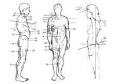
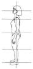

|
A avaliação postural é uma ferramenta fundamental no diagnóstico do alinhamento dos segmentos corporais de um indivíduo e é amplamente utilizada por profissionais de fisioterapia e educação física, como um passo inicial e de acompanhamento para a avaliação e tratamento fisioterapêutico e prescrição de atividade física. |
 |
|
|
|
|
 |
A forma mais objetiva e fidedigna de avaliação postural consiste no registro de fotografias do corpo inteiro do indivíduo em diferentes planos durante a postura ereta e em flexão anterior do tronco e posterior análise da posição relativa de referências anatômicas dos segmentos corporais por um profissional capacitado. Questões típicas avaliadas estão relacionadas à simetria da posição relativa dos segmentos corporais e ângulos articulares comparados a um padrão de referência. |
A despeito de sua importância no
diagnóstico,
infelizmente são poucos os profissionais no Brasil
que dispõem
de programas de computador
para uso técnico - clínico, nesta área.
Para comentários, sugestões, reportar
erros (bugs) use:
http://sapo.incubadora.fapesp.br/portal/forum/